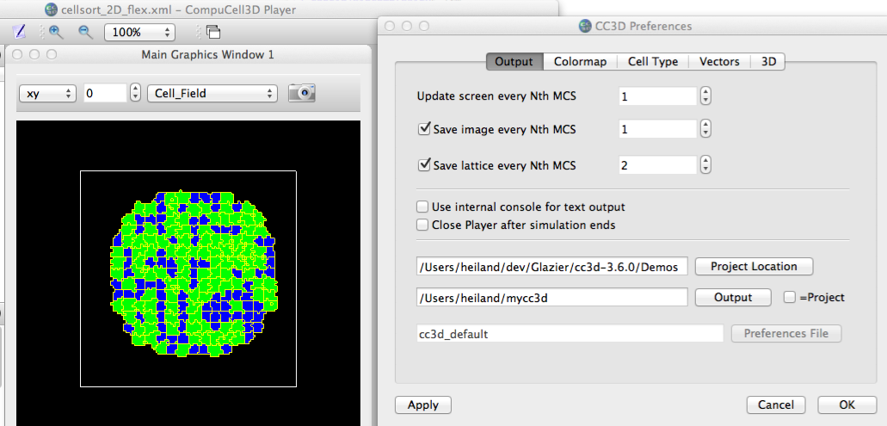
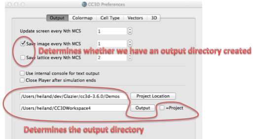

A more recent (Rev 2005) version of the Prefs panel
Results in the following output:
~/mycc3d/cellsort_2D_flex_xml_09_26_2011_15_46_35$ ll total 48 drwxr-xr-x 5 heiland staff 170 Sep 26 15:46 LatticeData/ -rw-r--r-- 1 heiland staff 5266 Sep 26 15:46 cellsort_2D_flex_xml_00000.png -rw-r--r-- 1 heiland staff 6030 Sep 26 15:46 cellsort_2D_flex_xml_00001.png -rw-r--r-- 1 heiland staff 6273 Sep 26 15:46 cellsort_2D_flex_xml_00002.png ~/mycc3d/cellsort_2D_flex_xml_09_26_2011_15_46_35$ ll LatticeData/ total 312 -rw-r--r-- 1 heiland staff 506 Sep 26 15:46 StepLDF.dml -rw-r--r-- 1 heiland staff 77520 Sep 26 15:46 Step_00000.vtk -rw-r--r-- 1 heiland staff 77616 Sep 26 15:46 Step_00002.vtk

The "trivial" change that happened to the Preferences:Output panel was the addition of the "=Project" toggle. This allows having the output go to the same directory as the "Project Location". But during the course of this change, I also eliminated the previous behavior of *always* having an (empty) output dir created, even if the user had not toggled on either image or lattice output. --------------------- Test cases: With a single window (the Main Graphics Window): With "=Project" (lower-right) toggled off: 1) toggle off both image and lattice; step/run sim and verify no output created (not even an empty dir) 2) toggle on just image; Step a few times; verify output created (assuming N small enough); NOTE #1: output directory will take on a unique time-stamped name: <sim prefix>_mm_dd_yyyy_hh_mm_ss NOTE #2: an empty /LatticeData subdirectory will also be created toggle on lattice also; step a few times; verify lattice output (.vtk files) created 3) without stopping the sim or loading a new one, toggle off both image/lattice; step/run awhile; toggle back on image and/or lattice; step/run; verify output is only created when toggles are on 4) repeat 3) and, after a few steps, change the output directory (e.g. append a "2" to CC3DWorkspace) 5) repeat 4), toggling off/on image and lattice 5) stop sim/start new sim; verify new output dir created With "=Project" toggled on: repeat above and verify output is created in the "Project Location" NOTE: if you "Open" a sim, e.g. in the Demos/cellsort_2D subdir, but leave the "Project Location" = .../Demos, then the output dir is created under /Demos, NOT under /Demos/cellsort_2D Verify you haven't caused problems with runScript, dumping to a custom dir, e.g.: runScript.sh -i cellsort_2D.xml -o /Users/heiland/CC3DWorkspace_custom With multiple graphics windows, where you have clicked the 'camera' icon (upper-right) of the "Aux" window(s) to signal that images should be saved (note that only images are saved, not lattice): -- repeat all of above Test File->Open Lattice Description Summary File... make sure it opens to the proper dir (depending on the Output "=Project" toggle) While dancing on your left foot, typing only with your right hand... (insanity sets in)